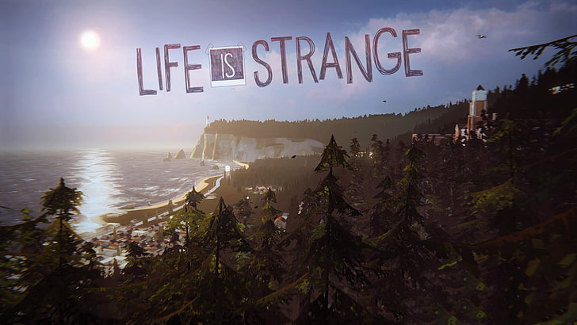

Overview

Most games will try to bring the player into a new and fantastic world, with characters personalities can be summarized in one or two sentences. The indie developer Dontnod Entertainment managed to raise the bar for story telling in the gaming industry and crafted many powerful moments within the beautiful melancholic story. All the characters feel alive and real; the writers managed to portray serious issues and the most human moments with the respect they deserve.
The story follows university student Max Caufield after she discovers her ability to rewind time which she uses to save her childhood best friend Chloe Prices’ life. A fair time is spent exploring the backstories of Max and Chloe as well as looking into the life of the other students on the university campus. The duo then being to uncover disappearances on campus and the story takes a turn into a detective thriller.